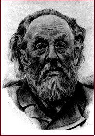

ACCELERATE ONCE · FLYBY
10^2969:1 ln R = 6,836 · log₁₀ R = 2,969A MACHINE THAT MUST THROW ITSELF AWAY
THE TYRANNY
OF THE ROCKET
EQUATION.
A rocket gains speed by discarding mass. But the propellant discarded at the end must first be accelerated by propellant discarded earlier. That recursion turns ambition into an exponential.
PUT 0.1c INTO THE EQUATIONCHEMICAL ROCKET · 0.1c · ACCELERATION ONLY
102969:1 INITIAL MASS : ARRIVING MASS
01 / THE SCHOOLTEACHER WHO QUANTIFIED THE DREAM
KONSTANTIN
TSIOLKOVSKY.
Konstantin Eduardovich Tsiolkovsky was a Russian mathematics teacher, largely self-educated and deaf from childhood, who spent his life working far from the laboratories that would later build rockets. Inspired by speculative literature and the possibility of interplanetary travel, he asked a question that fiction usually skipped: what must a vehicle physically do to accelerate in empty space?
In 1903 he published Exploration of Cosmic Space by Means of Reaction Devices. He advocated liquid propellants and derived the relationship between exhaust velocity, changing vehicle mass and achievable velocity. Later he developed ideas for multistage rockets, orbital stations, airlocks and closed life-support systems. He did not build the rockets; he established the mathematics that every rocket would have to obey.
“The Earth is the cradle of humanity, but one cannot live in the cradle forever.”— Tsiolkovsky, letter of 1911
02 / CONSERVATION OF MOMENTUM, WRITTEN AS A LIMIT
THE FORMULA IS
SIMPLE.
Δv=velnm0mf
- Δv
- The total velocity change the rocket can produce—not distance travelled and not simply its top speed.
- ve
- Effective exhaust velocity. Faster exhaust extracts more vehicle velocity from each kilogram thrown away.
- m0
- Initial or “wet” mass: payload, engines, tanks, structure and every kilogram of propellant.
- mf
- Final mass after the burn. It still includes the payload, engines, empty tanks and anything needed later.
Rearrange it and the trap becomes visible: m0/mf = eΔv/ve. Required mass does not grow in proportion to speed. It grows exponentially because propellant must accelerate the propellant that will be used later. Tanks and engines worsen the result; gravity and drag losses worsen it again.
03 / PUT A STARSHIP INTO THE EQUATION
HOW MUCH ROCKET
MUST ONE PAYLOAD
CARRY?
Choose a target speed and an effective exhaust velocity. The first result is a flyby burn. The second assumes the spacecraft carries everything required to remove the same velocity at the destination.
4.4 KM/S
High thrust; exhaust below 4.4 km/s.
CRUISE SPEED29,979 KM/S
PROXIMA CRUISE FLOOR42.5 YEARS
ACCELERATE + BRAKE · ARRIVAL
10^5938:1 ln R = 13,672 · log₁₀ R = 5,938IDEAL SINGLE VEHICLE · NO TANK MASS · NO ENGINE MASS · NO SHIELD · NO POWER SYSTEM · NO GRAVITY LOSS · PERFECTLY DIRECTED EXHAUST
04 / WHAT THE NUMBERS ACTUALLY SAY
0.1c IS NOT ONE
ENGINE UPGRADE.
THE EXPONENT ENDS THE DISCUSSION.
With 4.4 km/s exhaust, one acceleration to 0.1c demands a mass ratio near 102969:1. Staging can discard empty hardware and improve a real launch vehicle, but it cannot turn this exponent into a buildable machine.
HIGH EFFICIENCY IS NOT HIGH POWER.
NASA's NEXT ion engine reaches about 41 km/s effective exhaust velocity, yet its thrust is measured in fractions of a newton. Even ignoring acceleration time and power supply, the 0.1c mass ratio remains around 10318:1.
THE FIRST PLAUSIBLE NUMBER IS STILL ENORMOUS.
A Daedalus-like 10,000 km/s exhaust brings the ideal ratio down to about 20:1 for acceleration and roughly 410:1 when braking is included. The actual Daedalus study required about 54,000 tonnes for a 450-tonne payload—and it deliberately remained a flyby.
STOP CARRYING THE ENERGY SOURCE.
Laser sails and other beamed systems step outside the onboard-propellant equation. They replace propellant mass with a colossal external beam, delicate sail, pointing accuracy and a new braking problem. The equation is not defeated; the architecture has changed.
ROCKETS CAN CROSS INTERSTELLAR SPACE.The equation says a reaction-mass rocket needs exhaust velocity of the same order as its desired cruise velocity—or an absurd mass ratio. Reaching 0.1c is therefore not mainly a fuel-storage problem. It is a propulsion-physics problem.
05 / SOURCES & ASSUMPTIONSOPEN REGISTER +
NASA History · Tsiolkovsky biography ↗
ESA · Tsiolkovsky and the 1911 quotation ↗
NASA · classical rocket equation ↗
NASA Glenn · propulsion exhaust-velocity comparison ↗
NASA · NEXT ion-thruster performance ↗
JBIS · Daedalus exhaust velocity context ↗
British Interplanetary Society · Project Daedalus ↗